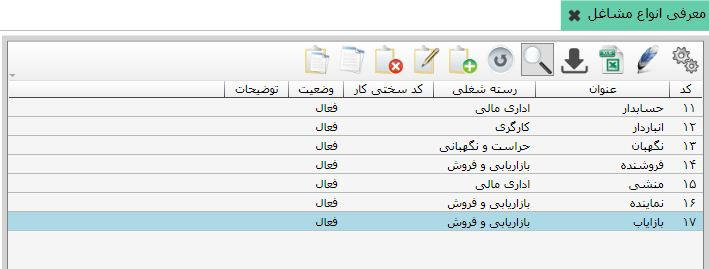
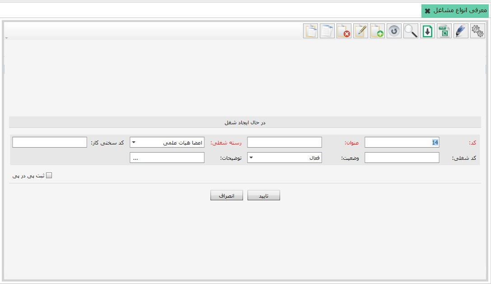

در این قسمت می توانید انواع مشاغل مربوط به فعالیت مورد نظرتان را تعریف نمایید. شکل مربوط به صفحه «معرفی انواع مشاغل» در زیر نشان داده شده است:
در شکل بالا انواع مشاغل تعریف شده در سیستم را مشاهده می کنید. برای ایجاد شغل جدید روی گزینه اضافه از نوار ابزار بالای جدول کلیک کنید، فرم ایجاد شغل نمایش داده می شود:
کد مربوط به شغل را خود نرم افزار پیشنهاد می دهد اما می توانید آن را تغییر دهید، پس از ثبت فرم دیگر امکان ویرایش برای کد شغل وجود ندارد. در فیلد عنوان نیز نام شغل مورد نظر را وارد کنید، در فیلد رسته شغلی نیز بر حسب نوع فعالیت سازمان شما و شغل ایجادی، یکی از مشاغل تعریف شده در این قسمت را انتخاب نمایید. سایر گزینه ها را نیز همانند سایر فرم ها کامل کنید و روی گزینه تایید کلیک کنید، شغل جدید مورد نظرتان ایجاد می گردد.